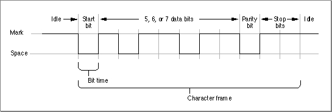

Introduction to Serial Communication
Serial Communication, like any data transfer, requires coordination between the sender and receiver. For example, when to start the transmission and when to end it, when one particular bit or byte ends and another begins, when the receiver's capacity has been exceeded, and so on. A protocol defines the specific methods of coordinating transmission between a sender and receiver.The scope of serial data transmission protocols is large and complex, encompassing everything from electrical connections to data encoding methods. This section summarizes the most important protocols and standards related to using the Serial Driver.
Asynchronous and Synchronous Communication
Serial data transfers depend on accurate timing in order to differentiate bits in the data stream. This timing can be handled in one of two ways: asynchronously or synchronously. In asynchronous communication, the scope of the timing is a single byte. In synchronous communication, the timing scope comprises one or more blocks of bytes. The terms asynchronous and synchronous are slightly misleading, because both kinds of communication require synchronization between the sender and receiver.Asynchronous communication is the prevailing standard in the personal computer industry, both because it is easier to implement and because it has the unique advantage that bytes can be sent whenever they are ready, as opposed to waiting for blocks of data to accumulate.
The Serial Driver does not support synchronous communication protocols. However, it does support synchronous clocking supplied by an external device.
- IMPORTANT
- Do not confuse asynchronous communication with asynchronous execution. Asynchronous communication is a protocol for coordinating serial data transfers. Asynchronous execution refers to the capability of a device driver to carry out background processing. The Serial Driver supports both asynchronous communication and asynchronous execution.
Duplex Communication
Another important characteristic of digital communication is the extent to which simultaneous two-way transfers of data can be achieved.In a simple connection, the hardware configuration is such that only one-way communication is possible (for example, from a computer to a printer that cannot send status signals back to the computer). In a half-duplex connection, two-way transfer of data is possible, but only in one direction at a time. That is, the two parties to the connection take turns transmitting and receiving data. In a full-duplex connection, both parties can send and receive data simultaneously. The Serial Driver supports full-duplex operation.
Flow Control Methods
Because a sender and receiver can't always process data at the same rate, some method of negotiating when to start and stop transmission is required. The Serial Driver supports two methods of controlling serial data flow. One method relies on the serial port hardware, the other is implemented in software.Hardware flow control uses two of the serial port signal lines to control data transmission. When the Serial Driver is ready to accept data from an external device, it asserts the Data Terminal Ready (DTR) signal on pin 1 of the serial port, which the external device receives through its Clear to Send (CTS) input. Likewise, the Macintosh receives the external device's DTR signal through the CTS input on pin 2 of the serial port. When either the Macintosh or the external device is unable to receive data, it negates its DTR signal and the sender suspends transmission until the signal is asserted again.
Flow control can also be handled in software by using an agreed-upon set of characters as start and stop signals. The Serial Driver supports XON/XOFF flow control, which typically assigns the ASCII DC1 character (also known as control-Q) as the start signal and the DC3 character (control-S) as the stop signal, although you can choose different characters.
Asynchronous Serial Communication Protocol
This section provides an overview of the protocol that governs the lowest level of data transmission--how serialized bits are sent over a single electrical line. This standard rests on more than a century of evolution in teleprinter technology.When a sender is connected to a receiver over an electrical connecting line, there is an initial state in which communication has not yet begun, called the idle or mark state. Because older electromechanical devices operate more reliably with current continually passing through them, the mark state employs a positive voltage level. Changing the state of the line by shifting the voltage to a negative value is called a space. Once this change has occurred, the receiver interprets a negative voltage level as a 0 bit, and a positive voltage level as a 1 bit. These transitions are shown in Figure 7-1.
The change from mark to space is known as the start bit, and this triggers the synchronization necessary for asynchronous serial transmission. The start bit delineates the beginning of the transmission unit defined as a character frame. The receiver then samples the voltage level at periodic intervals known as the bit time, to determine whether a 0-bit or a 1-bit is present on the line.
Figure 7-1 The format of serialized bits[Missing image]

The bit time is expressed in samples per second, known as baud (in honor of telecommunication pioneer Emile Baudot). This sampling rate must be agreed upon by sender and receiver prior to start of transmission in order for a successful transfer to occur. Common values for the sampling rate are 1200 baud and 2400 baud. In the case where one sampling interval can signal a single bit, a baud rate of 1200 results in a transfer rate of 1200 bits per second (bps). Note that because modern protocols can express more than one bit value within the sampling interval, the baud rate and the data rate (bps) are not always identical.
Prior to transmission, the sender and receiver agree on a serial data format; that is, how many bits of data constitute a character frame, and what happens after those bits are sent. The Serial Driver supports frames of 5, 6, 7, or 8 bits in length. Character frames of 7 or 8 data bits are commonly used for transmitting ASCII characters.
After the data bits in the frame are sent, the sender can optionally transmit a parity bit for error-checking. There are various parity schemes, which the sender and receiver must agree upon prior to transmission. In odd parity, a bit is sent so that the entire frame always contains an odd number of 1 bits. Conversely, in even parity, the parity bit results in an even number of 1 bits. No parity means that no additional bit is sent. Other less-used parity schemes include mark parity, in which the extra bit is always 1, and space parity, in which its value is always 0. Using parity bits for error checking, regardless of the scheme, is now considered a rudimentary approach to error detection. Most communication systems employ more reliable techniques for error detection and correction.
To signify the end of the character frame, the sender places the line back to the mark state (positive voltage) for a minimum specified time interval. This interval has one of several possible values: 1 bit time, 2 bit times, or 1-1/2 bit times. This signal is known as the stop bit, and returns the transmission line back to idle status.
Electrical lines are always subject to environmental perturbations known as noise. This noise can cause errors in transmission, by altering voltage levels so that a bit is reversed (flipped), shortened (dropped), or lengthened (added). When this occurs, the ability of the receiver to distinguish a character frame may be affected, resulting in a framing error.
The break signal is a special signal that falls outside the character frame. The break signal occurs when the line is switched from mark (positive voltage) to space (negative voltage) and held there for longer than a character frame. The break signal resembles an ASCII NUL character (a string of 0-bits), but exists at a lower level than the ASCII encoding scheme (which governs the encoding of information within the character frame).
The RS-422 Serial Interface
The electrical characteristics of a serial communication connection are specified by various interfacing standards, one of which is the RS-422 standard used in all Macintosh computers. This standard is an enhancement of the RS-232 standard, with electrical characteristics modified to allow higher transmission rates over longer lines. Although the electrical voltage differences can be critical at times and should therefore not be ignored, most of the terminology and concepts remain the same across these two standards. For purposes of this discussion, it is convenient to treat these two standards as a single entity.The specifications of the RS-422 and RS-232 interfacing standards are contained in documents available from the Electronic Industries Associations (EIA). The specifications cover several aspects of the connection between data terminal equipment and data communication equipment. These aspects include the electrical signal characteristics, the mechanical description of the interface circuits, and the functional description of the circuits.
The principal interface signals specified by the EIA are described in the following list. The term data terminal equipment (DTE) is used to describe the initiator or controller of the serial connection, typically the computer. The term data communication equipment (DCE) describes the device that is connected to the DTE, such as a modem or printer.
The RS-422/RS-232 signals are described below. For specific information about how these signals are used in Macintosh computers, see Guide to the Macintosh Family Hardware, second edition.
As you can see, implementations of the RS-422/RS-232 interface do not always correspond to the specifications set forth by the EIA. This is especially true when the DCE is not a modem.
- Data Terminal Ready (DTR). The DTR signal indicates that the DTE (that is, your computer) is ready to communicate. Deasserting this signal causes the DCE to suspend transmission. The DTR signal is the most important control line for a modem, because when it is deasserted, most modem functions cease and the modem disconnects from the telephone line. In Macintosh computers, the DTR signal is connected to the CTS signal, discussed next.
- Request to Send (RTS) and Clear to Send (CTS). The RTS signal was originally intended to switch a half-duplex modem from transmit to receive mode. The computer would send an RTS signal to the modem and wait for the modem to respond by asserting CTS. Since most communications between microcomputers are full-duplex nowadays, RTS/CTS handshaking is not often used in its original form. Rather, in most full-duplex modems, the CTS signal is permanently asserted, and the RTS signal is not used. In Macintosh computers, the CTS signal is connected to the DTR signal.
- Data Set Ready (DSR). The DSR signal is not used by Macintosh computers and is usually permanently asserted on microcomputer modems. It was intended to signal the computer that the modem had made a proper connection to the telephone line and received an answer tone from the modem on the other end. Modern modems communicate this information by sending messages to the computer.
- Transmitted Data (TD). The TD signal carries the serial data stream from the DTE to the DCE. The EIA specifications dictate that the DTR, RTS, CTS, and DSR signals must be asserted before data can be transmitted, but this requirement is not strictly followed in the computer industry.
- Received Data (RD). The RD signal is the counterpart of the TD signal, and carries data from the DCE to the DTE. Although the EIA specifies that this signal be in the mark state when no carrier is present, this requirement is rarely adhered to.
- Data Carrier Detect (DCD). The DCD signal is not used by Macintosh computers. In systems that use the signal, it is asserted by the DCE when a carrier signal is received.
- Ring Indicator (RI). The RI signal is not used by Macintosh computers. In systems that use the signal, it is asserted by the DCE when the telephone line is ringing.
Subtopics
- Asynchronous and Synchronous Communication
- Duplex Communication
- Flow Control Methods
- Asynchronous Serial Communication Protocol
- The RS-422 Serial Interface